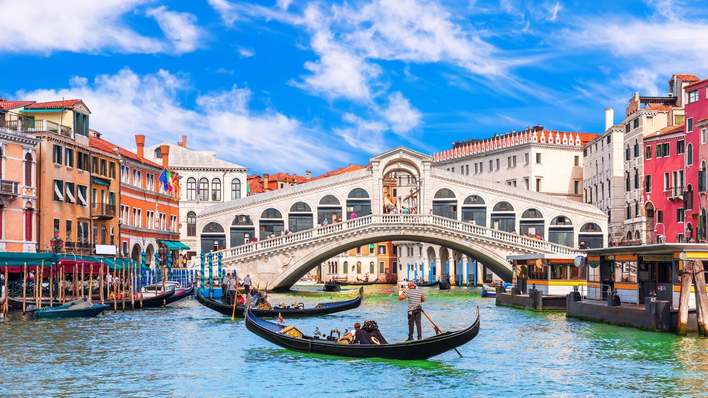
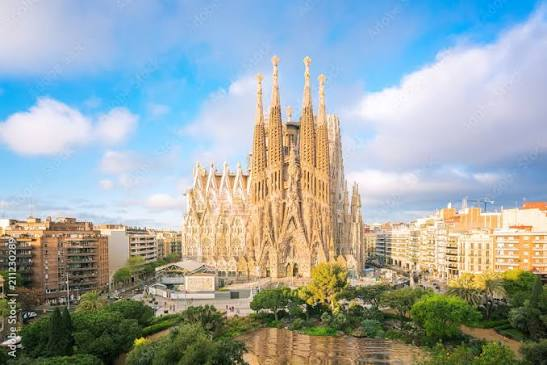
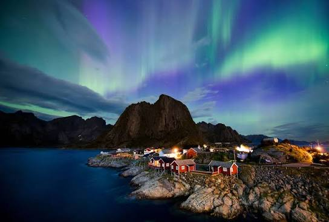
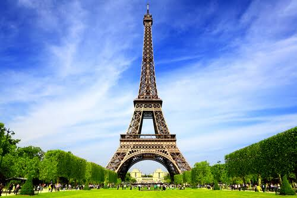
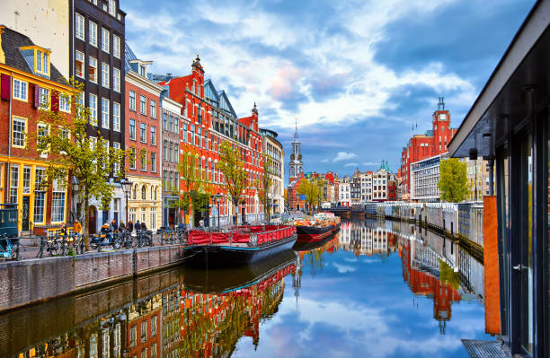
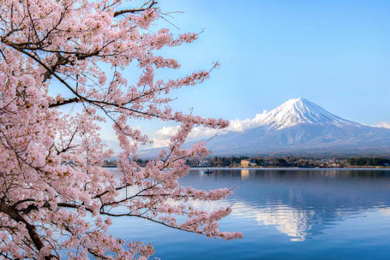

Italy 🇮🇹

Italy is one of the countries I enjoyed the most. I loved the streets, old buildings, Italian food, and the relaxed atmosphere. I would definitely like to visit Italy again.
I love travelling and seeing new places. I enjoy walking around new cities, trying local food, taking photos, and enjoying the atmosphere. Here are some of my favorite places and some destinations on my travel list.

Italy is one of the countries I enjoyed the most. I loved the streets, old buildings, Italian food, and the relaxed atmosphere. I would definitely like to visit Italy again.

Barcelona is a really fun and colorful city. I loved walking around the city, seeing the architecture, and spending time near the beach. There is always something interesting to see.

I visited Norway before and it was one of the most beautiful travel experiences for me. I really enjoyed the amazing nature, mountains, and peaceful atmosphere. The views were incredible and I would love to go back again one day.
The beautiful nature is what I loved the most about Norway.

France is also on my travel list. I would love to visit Paris, walk around the streets, see the Eiffel Tower, and try French food. I think it would be a really nice experience.

I really like the look of the Netherlands. The canals, colorful houses, bicycles, and tulip fields make me want to visit. Amsterdam is definitely a city I want to explore.

Japan is one of my dream destinations. I want to experience Japanese culture, try different foods, visit Tokyo, and see traditional temples. I hope I can visit Japan one day.
I started planning my travels in .
"Travel is the best way to discover new places and create memories."
I love travelling because every trip feels different. I can see new places, eat new foods, meet new people, and come back with lots of memories.